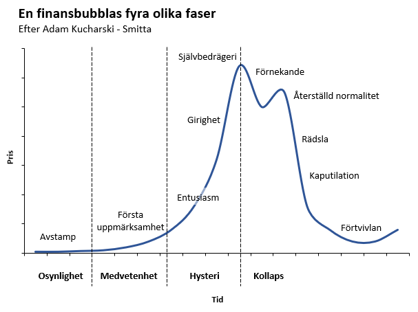

Ett lantställe. Ett torp. Enkelt och med vedeldad spis. Helst nära till en sjö. Tanken kom smygande. Först lite löst prat, mest för att få en riktning. Typ nästa steg. Utbildning, check. Barn, check. Lantställe, check. Tanken bet sig fast och växte till ett begär. Började kolla på hemnet, det måste ha varit omkring 2015. Bara kolla. Hade ändå inga pengar till insats. Men vi sparade och ett litet arv senare hade vi ändå något som skulle kunna materialisera begäret efter att tvätta rustika golv med såpa. Precis som alla andra. Problemet var just detta. Alla andra. Och covid-19. Under pandemin rasade värdet av vår sparade insats. Andreas Cervenka har räknat ut att en sparad miljon i insats som sökte sig mot bostadsmarknaden minskade med en hastighet av 25 000 kronor i månaden, vilket får dagens inflationssiffror att se ut som en krusning. Mellan sommaren 2020 och 2021 steg priset på villor i allmänhet med 30 procent eller mer. Det rådde hysteri.
Efter ett par decennium med stigande bostads – och börspriser har problem uppkommit. Inflation, räntehöjningar och krig. Tech-branschen som till stor del är beroende av lånade pengar och låga räntor verkar vara i kris sett till nedskärningar och rasade börsvärden. De senaste veckorna har några banker klappat ihop och just nu ryktas det om att Deutsche Bank har problem och eventuellt står på tur att falla. Hur det egentligen är med den saken återstår att se, men ekonomiska kriser och finansiella bubblor följer ett mönster som är slående likt sjukdomsutbrott. Skillnaden är att man brukar förknippa en uppgång i sjukdomsfall som negativ, medans en uppgång på börsen uppfattas som något positivt. Det är fel. Adam Kucharski visar i sin bok "Smitta – Om virus, våld, finanskriser och fake news" varför den synen är felaktig. När något går upp på börsen eller på bostadsmarknaden utan att det finns en övertygande förklaring till varför, är det snarare en illustration över mänsklig dumhet.
Figur 1.

Det refereras återkommande till ekonomiska problem som en smitta och när en bank kollapsar vidtas åtgärder för att förhindra eventuella spridningsrisker. Att ekonomiska problem kan spridas från ett land till ett annat, eller kanske framför allt från en bank till en annan blev tydligt under finanskrisen 2008.
Hur vet man då att det är smittsamt?
För att något ska vara smittsamt, oavsett om det är infektionssjukdomar, beteenden, åsikter eller roliga klipp som delas på nätet, förutsätter vi att det finns en förmåga att sprida sig från en punkt till en annan punkt. Vanligen tänker vi på ett virus eller en bakterie som smittar från en människa till en annan, men logiken går att applicera på andra saker också. I sin enkla form bestäms smittsamheten av det som kallas för reproduktionstalet, R0 (uttalas R-noll). Den mer precisa definitionen lyder:
"R0 är det antalet personer som i genomsnitt smittas av en smittsam person under hennes smittsamma period, när hon möter en helt mottaglig befolkning."
Eller som formel:
R0 = β × κ × D
Där β är risken för smitta per kontakttillfälle
κ är antalet kontakter
D är hur länge man är smittsam.
För att en smitta ska kunna sprida sig vidare och orsaka en epidemi måste R0 vara över 1. Alltså att varje smittade person i genomsnitt måste sprida smittan vidare till mer än 1 person. Annars kommer smittspridningen att avta av sig själv eller hålla sig kvar på en plan nivå.
Smittans intensitet
Anta att en smittsam sjukdom har ett reproduktionstal på 2, det vill säga att varje smittad personer smittar i sin tur två andra personer. Efter varje generation (smittomgång) dubbleras antalet smittade, och på bara några få generationer blir det totala antalet betydande. Efter ett tag kan man anta att antalet mottagliga personer minskar i takt med att de blir immuna (genom infektion eller vaccination), och att smittspridningen minskar.
Figur 2. Smittpridning där varje person smittar två nya personer.
I praktiken är R0 en abstraktion och något främst roar excel-män och de som arbetar med epidemiologiska modeller. Men det ger en fingervisning kring hur stor andel av befolkningen som behöver vara immun för att smittan inte längre ska kunna spridas effektivt. Framför allt visar det att det inte finns en oändlig uppgång. Kurvan vänder alltid ner förr eller senare.
Men nu är verkligheten mer komplicerad än att låta sig förklaras av en elegant formel, och R0 beskriver bara vad som händer utifrån ett förmodat medelvärde. Riskerna kan se helt olika ut bland olika grupper och befolkningar och i de flesta fall är det svårt, om inte omöjligt, att helt reducera detta till enkel matematik.
Smittans nätverk
En av orsakerna till finanskrisen 2008 var att bankerna hade lånat ut stora summor till bostadslån och sedan sålt skulderna vidare till andra. Problemet var att man lånat ut pengar till folk med små marginaler och liten ekonomisk säkerhet. Men alla de här riskabla lånen förpackades tillsammans med andra lån till en form av skuldsedlar (CDO:er) och såldes i sin tur vidare till andra. När bostadsbubblan sedan sprack blev de här skuldsedlarna i praktiken värdelösa, eller giftiga som ekonomer beskriver dem. I och med att de hade sålts vidare i flera led var de spridda över världen och utlöste de en global finanskris.
Den finansiella smittspridningen följer samma logik som könssjukdomar. Vill du undvika att bli smittad så handlar det inte bara om vilka du ligger med, utan också vilka de ligger med, som Warren Buffet skrev.
När man försökt kartlägga spridningen av sexuellt överförbara infektioner som exempelvis gonorré och hiv finns det ett återkommande mönster. Studier där man tittat närmare på de som smittats behöver antalet sexpartners inte nödvändigtvis vara särskilt stort i genomsnitt. Adam Kucharski beskriver exempelvis en gonorréepidemi i USA på sjuttiotalet där de smittade hade 1,5 sexpartner i genomsnitt, vilket då borde innebär att reproduktionstalet är under 1. Antalet partner måste rent matematiskt vara minst 2 för ens upprätthålla en endemisk (plan spridning). En partner som man smittas av och en som man smittar vidare till (vilket också förutsätter en smittrisk på 100 procent vid varje kontakttillfälle). Men kurvan med smittade steg trots detta. Förklaringen låg i att vissa personer är mer populära, och hade betydligt fler sexpartners än genomsnittet. Uppskattningsvis stod 20 procent av fallen för 80 procent av smittan. Dessa nyckelpersoner kom att kallas för superspridare. Nya personer som anslöt sig till nätverket tenderade helt enkelt att söka sig till de som var mest populära.
Vilket också visat sig gå igen i finansvärlden. Banker och mäklare tenderar att härma varandras beteende och söka sig till samma finansiella produkter och strategier. Ju mer komplext nätverket blir desto mindre betydelse får då deras så kallade riskspridning. Allt hänger ändå ihop, och har graviterat mot samma noder. Risken för smittspridning inom finansvärlden beror inte på hur stor risken är att en bank faller, utan framför allt beror risken på hur intrasslade bankerna är i varandra, och vilka som utgör de centrala delarna i nätverket.
Hur den faktiska prisstegringen var på torp i under perioden 2020 och 2021 var vet jag inte. Jag vet heller inte om vi har en bostadsbubbla som kraschar. Däremot vet jag att det som tidigare hade räckt till räckte inte längre. Det märkligaste var att det var så uppenbart.
Referenser
Adam Kucharski, “Smitta - om virus, våld, finanskriser och fake news”.
Andreas Cervenka, “Girig-Sverige”.
Lars Magnusson, “Finanskrascher”.
Johan Giesecke, “Modern infectious disease epidemiology”.